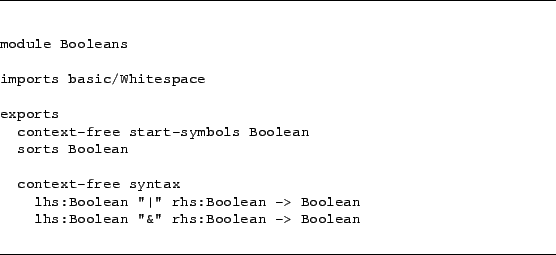

It is possible to decorate the members in the left-hand side of a
production rule with labels. These labels have no effect when
parsing input terms. However, when an SDF module is used as input
for generating APIs these labels will be used.
See below[ Figure ]CODE:labels
for an example of an SDF specification containing labels.
Figure 22:
The module basic/Booleans decorated with labels
|  |
Jurgen Vinju
2006-03-04